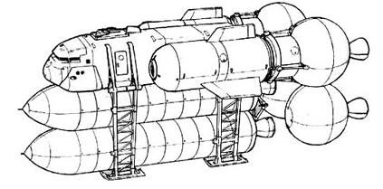

| Civilian Public |
|
|  | |
General and Technical Data |
|
|
Unit Type: space cargo ferry Operator: Colony Management Core, Earth Federation Propulsion system: 4x rocket thruster Hangar capacity: 1 cargo, 2x mobile suit Launch catapults: 0 Fixed armaments: 2x anti-ship missile (cannot arm if carrying mobile suits) Technical and Historical Notes A newer and more soundly designed transport, the Public's speedy design and large belly-mounted cargo area made it an excellent choice for the Federation to refit into a missile boat. However, the civilian model is still in use by the CMC as a cargo ferry. While its overall hangar capacity is smaller than that of a Federation Transport Craft, the way it is positioned allows for the servicing of two mobile suits instead of one. Terrorist groups have also been known to take the EFF's example, fitting two large missiles to the ships underbelly instead of housing cargo. |
 RPG quick stats sheet
RPG quick stats sheet